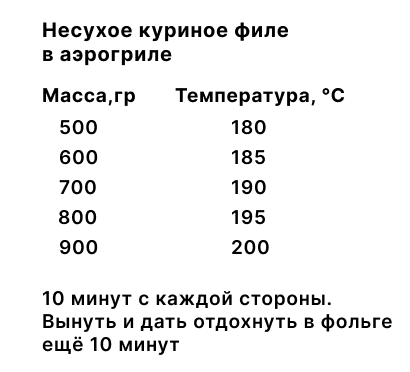
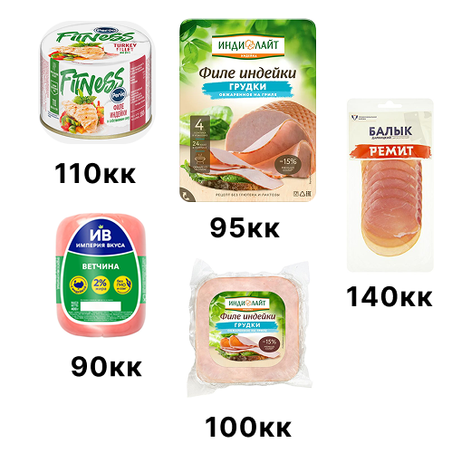
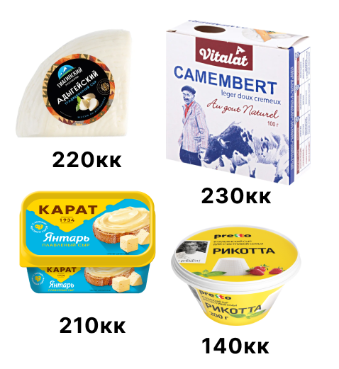
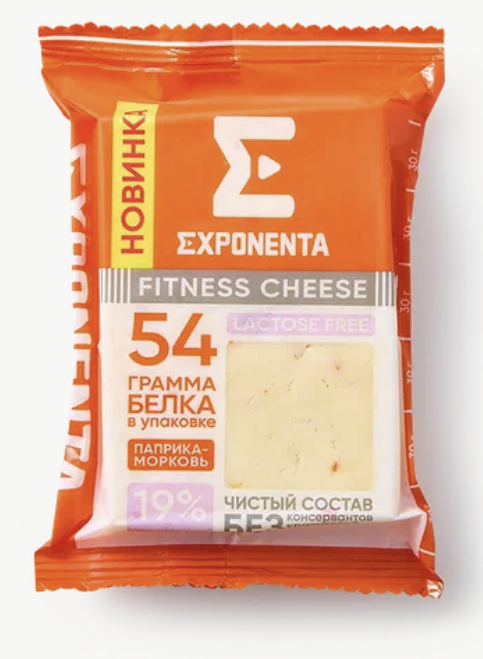
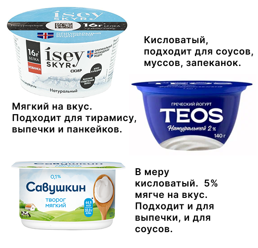
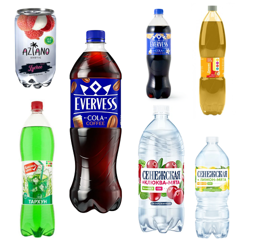
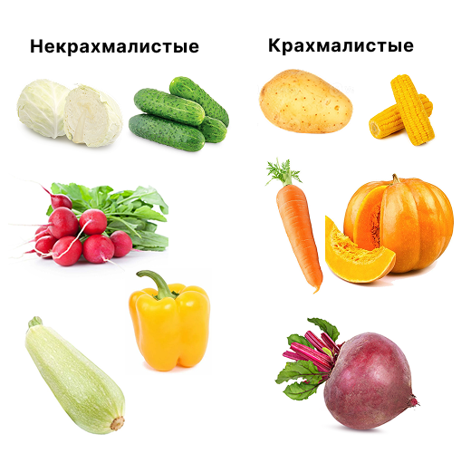

Как сделать рацион здоровым без подсчёта калорий
В этом коротком гайде я расскажу о принципах, которые вывела спустя три года отслеживания питания. Это вещи, которые я хотела бы знать в начале пути. Гайд будет полезен, если вы не хотите или боитесь считать калории и взвешивать еду, но стремитесь сделать питание здоровым.
Я не беру во внимание гликемический индекс продуктов. Это значит, что рекомендации не подойдут людям с диабетом.
В чём готовить
Снизить жирность блюда поможет правильная сковорода. Сможете ли вы готовить без масла, зависит от покрытия. Такая готовка портит посуду, поэтому долговечность зависит от материала и толщины стенки.
Для газовых и электрических плит берите сковороды из кованого или литого алюминия с антипригарным покрытием. Они лёгкие и недорогие — от тысячи рублей на маркетплейсах. Цена варьируется в зависимости от вида покрытия: тефлон, керамика или мраморная крошка. Тефлон — самый бюджетный, но быстро портится: прослужит не больше года ежедневного использования. Мраморное покрытие стоит от полутора тысяч рублей, но выдерживает более высокую температуру и не боится металлических лопаток. Полноразмерные алюминиевые сковороды с керамическим покрытием стоят от двух тысяч рублей. Они не выделяют вредных веществ при нагреве, но легко царапаются, и еда начинает прилипать. Чтобы бюджетная алюминиевая сковорода не отправилась на помойку после двух готовок, рекомендую сбрызгивать поверхность маслом и использовать силиконовые или деревянные лопатки.
Для индукционных и электрических плит подойдёт стальная сковорода. Она выигрывает по сроку службы, но сложнее в использовании. Прогревайте сковороду, пока капельки воды на поверхности не соберутся в шарики и не будут кататься по сковороде, иначе еда прилипнет навеки. Этот вариант подойдёт скорее опытным гурманам.
Для тех, кто обладает свободным бюджетом, подойдёт вариант с аэрогрилем. Он готовит мясо с помощью горячего воздуха за 15–20 минут и без масла. Быстрее, чем духовка. Выбор аэрогриля зависит от предпочтений в готовке и количества членов семьи. Подробнее о том, какой подойдёт именно вам, — в статье «Как выбрать лучший аэрогриль».

Как сократить количество масла на сковороде
Это легко сделать с помощью дозатора для жидкого масла или готового баллончика из магазина. Пара пшиков — и ничего не прилипает. В случае со сливочным маслом можно смазывать сковороду бруском вместо целого кусочка.
Какие брать продукты
Общий принцип прост: смотрите на состав и выбирайте менее жирное. На полке с колбасой берите копчёную грудинку, балык или изделия из индейки. В них много белка и мало жиров. Твёрдые сыры — «лёгкий», сулугуни. Мягкие — рикотта, адыгейский, моцарелла. Хлеб — любой, в котором 1–2 г жира в составе. Но смотрите на упаковку: пищевая ценность меняется в зависимости от марки.

На полке с выпечкой выбирайте булки. Сдоба с начинкой из джема или творога менее калорийная, чем круассаны или шоколадные десерты. Если хочется солёного, хорошим выбором станут пирожки с капустой или яйцом.
Когда охота пожевать что-то под фильм, выбирайте маленькие упаковки попкорна. Картофельные чипсы замените мясными или сушёным кальмаром.

Мы неосознанно повышаем калорийность питания, выбирая переработанные продукты: пельмени, колбасу, готовые блюда. Данные о БЖУ на этикетке часто не соответствуют действительности. В реальности продукт может быть гораздо жирнее. Это недобросовестность производителя или издержки производства. Полуфабрикаты из птицы менее калорийны, чем из мяса. Но лучше, если они не составляют основу рациона.

Включите в рацион больше белка: птицы, рыбы, творога, яичных белков, фасоли. Даже если вы не занимаетесь спортом, стоит сделать это по нескольким причинам:
- белок даёт насыщение: чем больше в блюде белка, тем дольше вы будете сыты и тем меньше съедите;
- организм тратит больше энергии на то, чтобы переварить белок: это значит, что вы условно съели 30 калорий белка, а усвоилось только 21 калория. Для сравнения: из углеводов усвоится 28,5 калории, а из жиров — 29,5;
- это вкусно: в интернете много белковых рецептов на любой вкус.

Какие выбирать напитки
Напитки с сахаром не дают сытости, и их легко выпить много. Выбирайте дешёвые магазинные лимонады на сахарозаменителях. И это не только кола без сахара. В обычных магазинах у дома продаются дюшесы, тархуны и грушарики. А на маркетплейсах и в гипермаркетах выбор ещё шире. Кстати, будьте осторожны с колой и эвервессами без сахара: содержание кофеина в 0,5 л — менее 75 мг, но для сравнения: в некоторых энергетиках — 80 мг в 0,3 л. От баночки ничего не будет, но обычно на ней никто не останавливается.

Как увеличить размер порции, не повышая калорийность
Калорийность питания не зависит напрямую от размера блюда. Снижайте пищевую ценность, заменяя углеводы овощами. Их делят на два типа по уровню содержания крахмала.
Некрахмалистые овощи как раз подойдут для увеличения объёма порции без повышения пищевой ценности: в них много воды и мало углеводов.
А крахмалистые овощи станут полноценным гарниром. Они менее калорийны, чем крупы или макароны, но насыщают не хуже. Однако их калорийность выше, чем у некрахмалистых овощей. Сравните ощущения после стакана молока и воды — тут принцип тот же.

Как вести себя в ресторане, если вы худеете
Если вы едите вне дома, следуйте простым правилам.
- Выбирайте простые блюда с понятным составом. Вместо котлет — цельный кусок мяса, а вместо оливье — греческий салат.
- Попросите соус отдельно. Так вы регулируете калорийность блюда. В ресторанах соусы жирные и часто составляют чуть ли не треть калорийности блюда.
- Выбирайте блюда зелёного цвета. Звучит забавно, но, если подумать, вполне логично. Такие блюда обычно состоят из курицы в паре с некрахмалистыми овощами типа огурцов или брокколи. Они, скорее всего, помещены в раздел здорового питания. Уточните, не налили ли туда литр оливкового масла.
- Отдайте предпочтение белому мясу. Красное мясо калорийнее, потому что жирнее. Если ваша цель — сэкономить калории, выбирайте курицу. Только не крылышки: это не так работает.
- Выбирайте несладкий алкоголь. В нём меньше сахара, а значит, ниже калорийность. Принцип прост: чем крепче и слаще алкоголь, тем он калорийнее. Например, светлое и тёмное пиво, сухое вино и игристое.
Признайте, что вы в ресторане. Если вы вынуждены питаться вне дома постоянно, правила помогут держать себя в форме. А если это особый случай, позвольте еде принести удовольствие и не давитесь зеленью.
Как в итоге не блевать от этого
Вкусовые предпочтения возможно изменить, но не насильно пихая в себя пищу. Мне нравится относиться к этому как к исследованию себя: пробовать новый вкус, искать интересное сочетание. А заодно и приносить пользу организму. Главное — не отнимать у себя возможность получать удовольствие от еды.